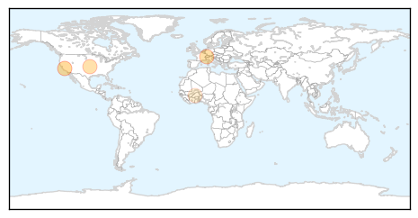

Meningitis
30-Day Web Trend
0 alerts, 0 warnings

30-Day Twitter Trend
0 alerts, 0 warnings

Article Locations
Article Confidences

Top Articles:
- 0.975
- Over 1 Million in Guinea Get Meningitis Vaccine
- 0.788
- Novartis Files BLA to FDA For Men B Vaccine Bexsero
- 0.602
- Novartis submits application to the FDA for meningitis B vaccine candidate Bexsero® to help protect US adolescents and young adults
- 0.515
- Novartis, Pfizer seek U.S. approval of meningitis vaccines
- 0.514
- Novartis, Pfizer seek U.S. approval of meningitis vaccines
- 0.514
- Novartis, Pfizer seek U.S. approval of meningitis vaccines
Top Tweets:
-
No tweets found for Jun 17, 2014
Chikungunya
30-Day Web Trend
12 alerts, 1 warnings

30-Day Twitter Trend
1 alerts, 0 warnings

Article Locations

Article Confidences

Top Articles:
- 1.000
- Caribbean chikungunya cases top 170,000
- 0.999
- New mosquito-borne virus is a threat, experts say
- 0.996
- Georgia Woman Describes Crippling Pain of Chikungunya Virus
- 0.996
- Georgia Woman Describes Crippling Pain of Chikungunya Virus
- 0.995
- Mosquito-borne virus may soon hit GA, health dept. warns
- 0.992
- Florida chikungunya cases continue rise, 70% related to Haiti travel
- 0.987
- Mississippi investigating case of chickungunya, a mosquito-borne illness found in Africa, Asia
- 0.986
- CDC: Mosquito-borne disease spreading to US
- 0.986
- Painful New Virus Symptoms Can Last a Year or More
- 0.969
- MSDH investigates first possible case of chikungunya in Miss.
- 0.956
- Two suspected cases of incurable mosquito-borne virus in N Ga.
Top Tweets:
-
No tweets found for Jun 17, 2014